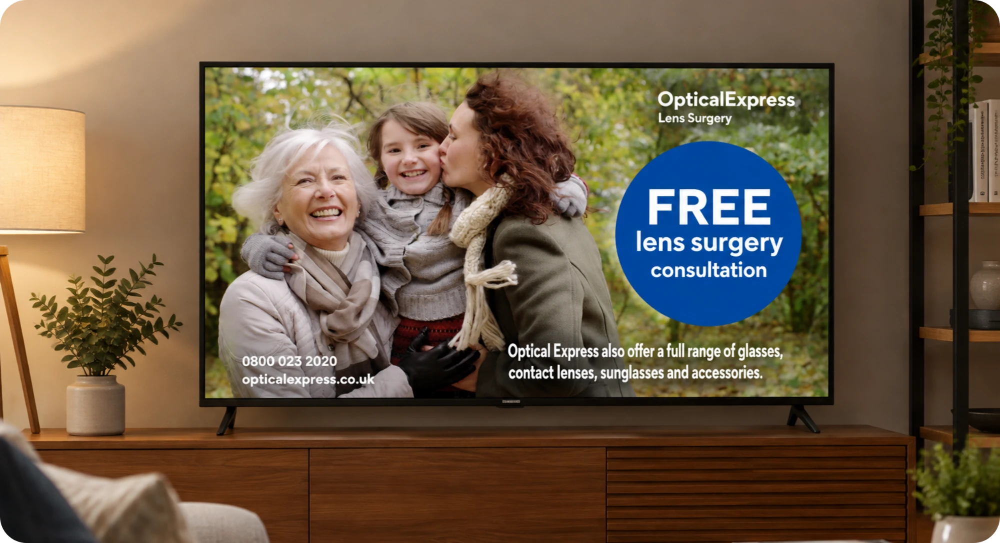
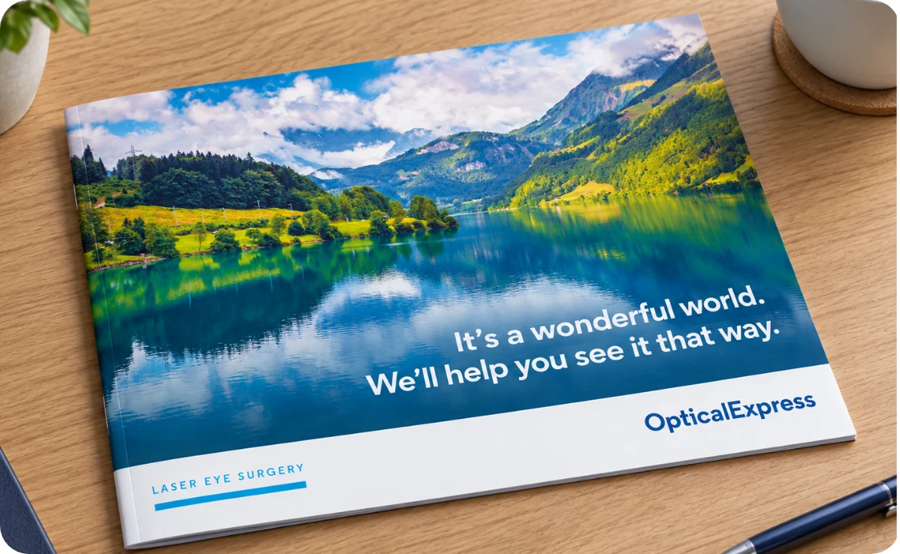
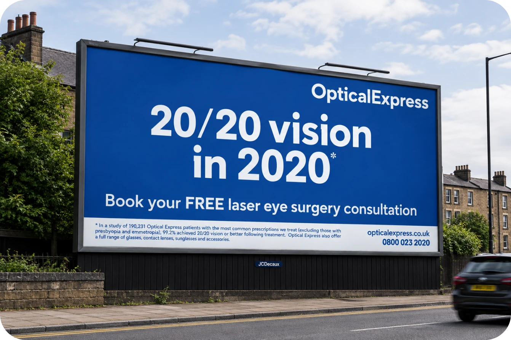
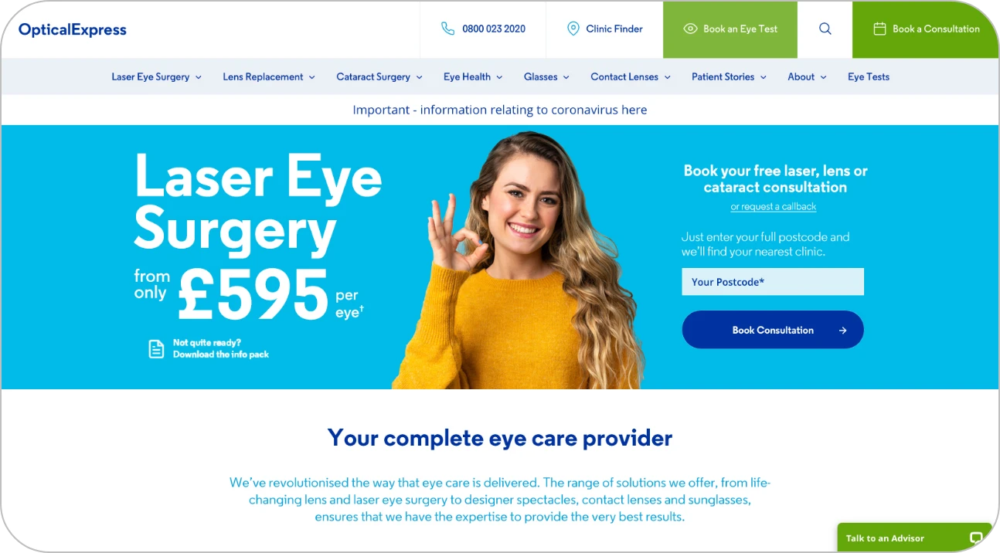
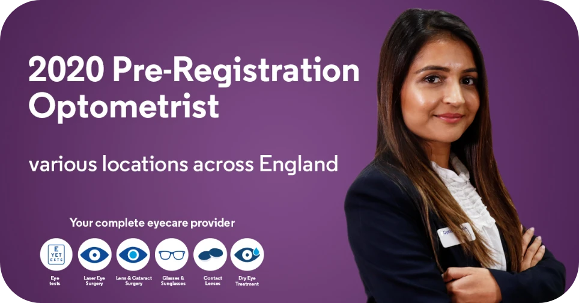

Optical Express
Print, Digital, Motion Graphics, Social Media, Web Design, TV & Radio, Voiceover
While working at Optical Express I was lucky enough to do a little bit of everything. From brochures, leaflets in print design, to digital & social media adverts, TV & Radio ads, emails, clinical documents, POS, store designs, website design, event materials to working on a company rebranding that would required every aspect of the company to be updated.

Print & Brand Design
From printed marketing materials to large-scale brand development, I created designs that communicated the Optical Express brand consistently across a wide range of formats. My work included brochures, leaflets, clinical documents, and point-of-sale materials, as well as contributing to a company-wide rebrand that would transform the visual identity across every touchpoint.

Corporate & Environmental Design
Beyond traditional marketing, I contributed to projects that brought the brand to life across physical spaces and corporate environments. From store design and in-store materials to event collateral, I helped deliver a consistent visual identity across customer-facing spaces, internal communications, and wider business initiatives.


Website Design & Digital Advertising
I worked across a variety of digital and advertising channels, creating engaging content to support marketing campaigns and connect with audiences. This included digital and social media advertising, TV and radio campaigns, email marketing, and website design, ensuring a cohesive brand experience across both online and broadcast media.